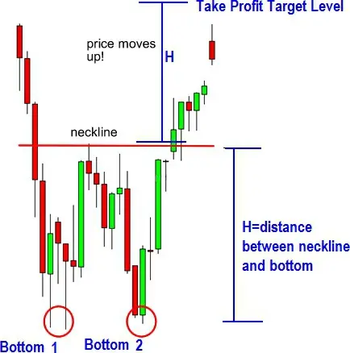

Profitable Chart Patterns .
Chart patterns and candlestick patterns differ from one another. Chart patterns differ from candlestick patterns, and
candlestick patterns differ from chart patterns.
☐ A trader can use chart patterns to understand price activity and predict where the price is likely to go by
identifying geometric shapes in the price data.
☐ Candlestick patterns, on the other hand, can involve a single candlestick or a collection of candles that have
developed sequentially in terms of their body length, opening and closing prices, wicks (or shadows), and other
characteristics.
Being unaware of the chart patterns that are developing can be expensive. If that describes you, now is the time
to change course.
Why would something so expensive be a mistake? You take a trade that is absolutely out of line with what the chart
pattern is signaling or telling you since you have no idea what is developing on the charts and are utterly
unconscious of it!
You Will Discover Nine Chart Patterns And They Are As Follows:
☐ Symmetrical, ascending, and descending
triangle chart patterns (3 patterns)
☐ Head-shoulders-and-Shoulders-Inverse (2 patterns)
☐ Double Top and Bottom (2 patterns)
☐ Tripple Top and Tripple Bottom (2 patterns)
I'll start off by discussing triangle chart patterns.
Triangle with equal sides (Symmetrical Triangle)
There are three different triangle chart patterns, and the graphic below clearly illustrates how they differ from one
another:
Let's begin by looking at the
symmetrical triangular pattern.
Are Symmetrical Triangles Bullish Or Bearish Charts Patterns?
The symmetrical triangle chart pattern can be bullish or bearish because it is a continuation pattern
So what does this mean? Well, If you notice this pattern during an uptrend, prepare for an upside breakout.
See an illustration below:
Expect a breakout of this pattern to the downside, as
demonstrated in the example below, if you observe a symmetrical triangle pattern forming in a downtrend:
Drawing A Symmetrical Triangle
☐ You'll notice that the price is fluctuating up and down, yet it is actually convergent at one point.
☐ For you to construct the two trendlines on both sides, there must be a minimum of two peaks and two troughs.
☐ It won't take long for the price to deviate from the pattern and go up or down.
Trading the Symmetrical Triangle In Two Simple Method
1. Trade The Initial Breakout Of The Symmetrical Triangle.
The ideal strategy is to use a candlestick to verify that the breakout actually occurs before placing your symmetrical
triangles form order. What I do, for instance, is watch
in the 4 hour charts because I know a breakthrough is about to occur.
In order to wait for the breakthrough, I then turn to the 1 hour chart. My trade entry signal is a 1 hour candlestick
that has broken the triangle and closed below or above it. As a result, I'll put in a pending buy/sell stop order to take
advantage of the breakout from there.
In order to capture the move that occurs and prevent false breakouts while the candlestick is still open, I frequently
want to wait until the 1 hour candlestick closes outside of the triangle before entering a pending buy stop or sell stop
order.
The issue with trading triangle breakouts is as follows, as shown in the chart below:
Here are several reasons why I don't enjoy trading breakouts like the one above:
☐ There is an excessive stop loss distance. I prefer to place trades with
breakout candlesticks that are near the broken trend lines.
☐ As shown in the above chart, I frequently observe
that such breakouts of extremely long candlesticks are not sustainable, and
the price will frequently tend to turn around after such candlesticks.
Take note that the price fell for the next four candlesticks after the
breakout candlestick, which was followed by one bearish green pin
bar. This is what tends to happened with such long breakout
candlesticks. So if you entered a buy order using that long breakout
candlestick above, you would have to wait a while for your trade to
turn profitable.
2. Trade The Retest Of The Broken Trendline
● The second method of entry is to wait for a retest of the triangle pattern's broken trendline before buying or
selling.
● This may also be useful if your first breakout candlestick was quite long; in that case, your best course of action is
to wait for a retest of the breakout trendline before entering.
Options For Placing Stop Losses.
The following three methods for placing stop losses on triangle patterns which comprises TRIANGLE of
SYMMETRICAL, ASCENDING, AND DESCENDING PATTERNS are described. Take notice that the stop
loss placement methods used here work for all triangle patterns .
Chart Patterns Of Ascending Triangle
An ascending triangle pattern resembles the chart below:
And the appearance of a genuine chart is as follows:
Is The Ascending Triangle a Bullish or Bearish Pattern?
In an ongoing upswing, it is regarded as a bullish continuation pattern. So, when you notice this developing during
an upswing, prepare for an upside breakout.
When it forms in a downtrend, though, it can also be a powerful reversal indicator (bullish).
Options for Placing Stop Losses
The tactics listed in the symmetrical triangle can be used.
Options For Take Profit
I like to set my take-profit target at previous resistance levels.
You can also set your take-profit goal at the "x" pip distance, as seen on the chart below. Another approach would
be to choose a distance that is two or three times the "x" pips. That ought to indicate your desired degree of earnings
(s).

Chart Patterns Of Descending Triangle
The descending triangle chart pattern has a few significant points to be aware of:
Until a breakthrough occurs to the downside, the descending triangle chart pattern is characterized by declining
resistance levels and reasonably horizontal support levels converging at a point as shown below:
On the chart below, a descending triangle appears as follows:
Are Descending Triangle Pattern Bullish Or Bearish?
It develops as a continuation pattern in a downtrend and is a bearish chart pattern.
At the end of an uptrend, this pattern can also appear as a bearish reversal pattern.
Therefore, it is a bearish chart pattern regardless of where it develops.
The Descending Triangle Formation Trading Strategy
The initial breakout can be traded, like with the other 2 triangle formations, or you can wait to see if the price
reverses to test the broken support level before selling.
Note: When trading a triangular pattern, I frequently choose to hold off until a candlestick breaks out and closes
outside of the pattern. By doing this, misleading breakout indications are decreased.
However, there are instances when I will just trade the breakout with a pending sell stop order just a few pips below
the support level to catch the breakout when it occurs. However, when I do this, I sit and watch the 1hr candlestick's
finish to ensure that it does not close above the support line (if that happens, it may mean a false breakout).
The issue of exceptionally long breakout candlesticks is also present, as shown in the following example:
As was previously stated,
it is preferable to wait and see if price will reverse and climb back up to the support level that was broken (a retest),
which will now be acting as a resistance level, before selling when that level is struck when you witness such
exceptionally extended breakout candlesticks.
Profit Taking
As my take profit target level, I like to use previous support levels, lows, or troughs.
Measure the height of the triangle; if the height is, say, 100 pips, then that is your take-profit aim. This is another
classic take-profit technique. You can see exactly how to do it from the chart below:
Be aware that the falling triangle on the chart marked the conclusion of an uptrend.
Chart Pattern Of The Head and Shoulders
A bearish chart pattern is the head and shoulders pattern. A head and shoulders reversal pattern appears as follows:
The head and shoulder pattern has the following important considerations:
The head and shoulders pattern is a bearish reversal pattern that denotes the conclusion of an uptrend when it
appears during one.
THIS IS HOW THE PATTERN DEVELOPS:
● Once the market has been rising for a while, it eventually starts to slow down and the forces of supply and demand
are generally thought to be in balance.
● The downside is tested as sellers enter at the highs (left shoulder) (beginning neckline.)
● Soon after their return, buyers drove prices up to new highs (head.)
● But the fresh highs are rapidly reversed, and the downside is once more challenged (continuing neckline.)
● The market rallies once more as tentative buying reappears, but it is unable to surpass the prior high. (This final
piece is regarded as the right shoulder.)
Buying stops, and the market once more tries its downside. You should create your trendline for this pattern
from the starting neckline to the remaining neckline.
Here's one more:
Head and Shoulders Chart Pattern Trading .
This figure below clarifies it a lot better.
1. Go short when price breaks below the neckline, then place a stop loss above the neck peak.
2. If price comes back to the neckline, go short on a reversal signal and place a stop loss above the resistance
level.
Profit Target Calculation
● To determine my take profit target, I use past lows or troughs.
● However, you can also set your take profit target
level as the number of pip between the neckline and the head. Then, if you trade the initial breakout and the distance is 100 pips, you set it
at the 100 pips take profit target level, as in the chart below with the two blue lines:
The Head And Shoulder Pattern In Reverse (Inverse)
Even though it is less common, you will still encounter this pattern, so keep an eye out for it. The head and
shoulders pattern's exact opposite, the inverse head and shoulders pattern, is a bullish reversal candlestick pattern
It appears as follows:
Inverted Head and Shoulders as a reversal pattern in a downtrend ( bullish)
And it looks like this on an actual chart:
Trading Technique for the Inverse Head and Shoulders
You can either buy at the neckline's initial breakout or wait until the price has broken out once more and been tested
at the broken neckline before buying. Use bullish reversal candlesticks as confirmation for your trade entrance if
you're waiting to buy on a retest.
I typically set my profit target at previous highs. Your profit target can be established by measuring the separation
between the head up and the trendline and translating the measurement to pip units. Look at the chart above,
particularly the two vertical blue lines.
Double Bottom Chart Pattern.
When a double bottom chart pattern appears during a downtrend that is already in place, it suggests that an upward
trend may be on the horizon. Here's how it appears:
On a real forex chart, a double bottom pattern appears as follows:
Three methods for Trading Double Bottoms
1. Trade The Neckline Breakout:
When a double pattern has developed and the neckline is being tested, many traders jump in as soon as a breakout
takes place.
2. Delay entering the Broken Neckline retest.
Other traders prefer to join when the price reverses back down to touch the neckline, which now serves as a support
level. When it reaches that particular level, people purchase.
3. Buy second-to-last bottom.( bottom 2)
If the neckline is intercepted in this way, you may be able to ride the trade all the way up. Consider buying at bottom
2 as buying at a support level— because that is exactly what you are doing! For trading entrance signals, look for
bullish reversal candlestick patterns.
Taking Profit Option
● The neckline or any previous highs above that can be used as your takeprofit target levels if you buy at bottom 2
of the chart.
● Use the number of pip intervals between the neckline's bottom and top to determine your profit target if you
decide to purchase the neckline's breakout. See the example in the chart below:

Chart Pattern of a Double Top
When a double top chart pattern is seen during an uptrend and the neckline is broken, a downtrend is confirmed.
This pattern is a bearish reversal pattern. The twin tops are incredibly potent patterns, and if you enter a trade at the
proper time, you might benefit greatly when the negative breakout occurs.
Here is an illustration of a double top chart pattern:
The Double Top Chart Pattern Trading
The double top chart pattern can be traded in 3 different ways:
● Trade the neckline's initial breakout.
● The method I prefer to use when I detect a bearish reversal candlestick is
to enter a sell trade on Peak.
2. And your earnings are significantly increased if the price declines, crosses the
neckline, and continues to decline.
● If you want to sell, you can wait for the price to test the broken neckline,
which is now a level of resistance, and then do so when you see a bearish reversal candlestick pattern, as demonstrated by the example below:
On a live forex chart it appears like the image below
Taking Profit From The Double Top Chart Pattern:
To determine take profit levels, use past lows (support levels). Alternatively, if you are trading the breakout from the
neckline, you might calculate the distance between the neckline and the highest peak (the range) and use that
difference in pips as your take-profit target.
Triple Bottom Chart Pattern
Triple bottoms are not forming as frequently, in my opinion. Whatever the case, you should know what it appears to
be:
Note that triple bottoms are bullish reversal chart patterns, therefore if they appear during a downtrend and the price
moves upward after the neckline is broken, this indicates that the trend is moving upward.
Look at this illustration bellow:
Trading The Triple Bottoms
● Many traders choose to trade the initial breakout only after the neckline has been breached.
● Others, upon spotting a bullish reversal candlestick, will hold off placing a buy order until the broken neckline is
tested again.
● I like to watch the price action before entering trades on the third bottom. I purchase when I spot a bullish reversal
candlestick pattern. Why do I act that way? I would make a lot more money than if I had purchased the neckline
breakout if the price rose and broke through it.
Profit-taking strategies would resemble the previously mentioned doublebottom chart pattern.
Charts Patterns of the Triple Top
In contrast to triple bottoms, triple tops are bearish chart patterns. Although they are uncommon, it is nonetheless
wise to be aware of their appearance. When a triple top is discovered during an uptrend, the uptrend is over when the
neckline is broken and the price starts to fall.
The Triple Top Chart Pattern Trading.
● Some cautious traders will only trade a breakout if the neckline is broken.
● Some people will probably hold off
on selling until the neckline is retested.
● I like to place trades on Peak 3 because I can make much more money if
the trade breaks the neckline and goes all the way down. The secret to taking a profitable trade on the 3
rd peak is by
keeping an eye out for bearish reversal candlesticks , you can make money.
Going Short Signal
● If you place a trade at peak 3, the neckline might be your profit goal.
● Alternatively, if you decide to trade on the
breakout of the neckline,
determine your profit objective by multiplying the distance in pips between the neckline and the highest of the three
peaks. Alternately, you might use a previous low as your take profit target level.